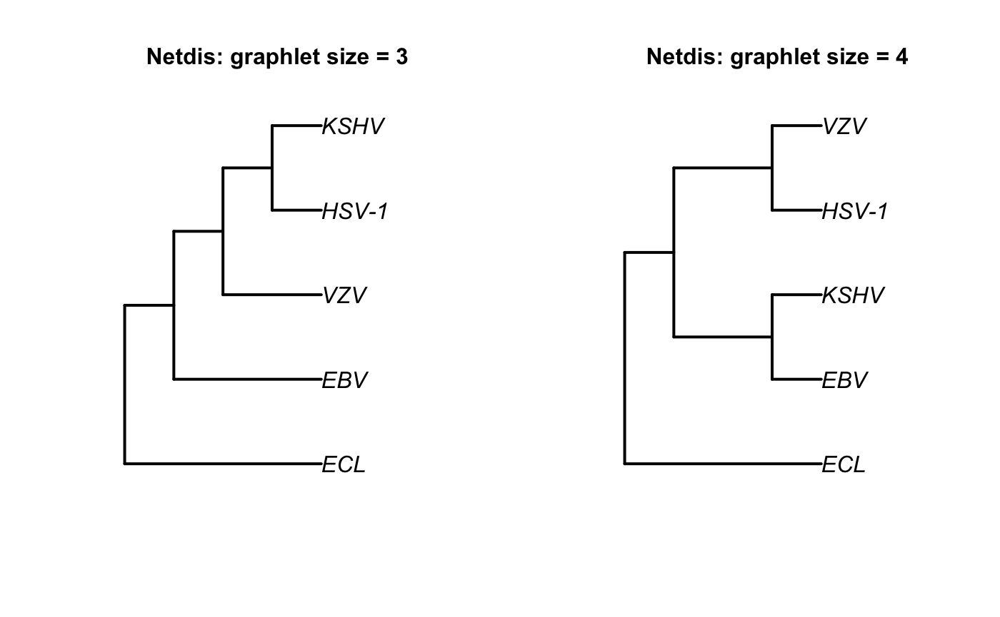
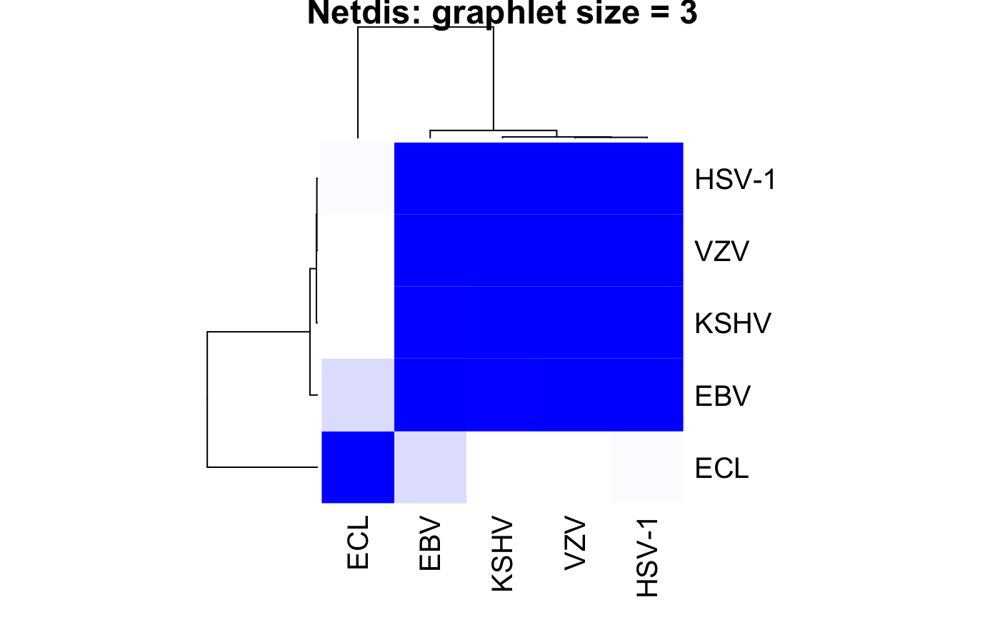
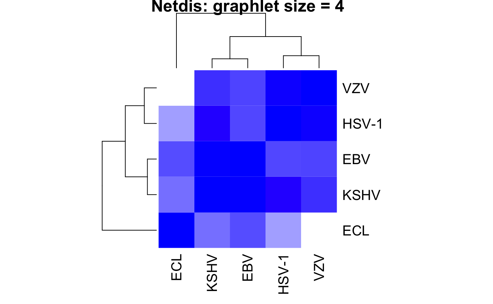

Quick_start_net_dis.RmdUse read_simple_graphs to read graph data from all files in a directory that match a specific filename pattern in a format suitable for calculating graphlet-based feature counts using the ORCA package. We use igraph::read_graph to read graph data from files, so support all file formats it supports. See help for igraph::read_graph for a list of supported values for the format parameter and the igraph documentation for descriptions of each of the supported file formats.
The ORCA package we use to efficiently calculate graphlet and orbit counts requires that graphs are undirected, simple (i.e. have no self-loops or multiple edges) and connected (i.e. have no isolated vertices). Therefore, by default, graphs loaded by read_simple_graphs will be coerced to have the above properties. This can be avoided by setting the relevant as_undirected, remove_loops, remove_multiple or remove_isolates parameters to FALSE.
library("netdist")
edge_format = "ncol"
# Load reference graph (used for Netdis. Not required for NetEMD)
ref_path = file.path(system.file(file.path("extdata", "random"), package = "netdist"), "ER_1250_10_1")
ref_graph <- read_simple_graph(ref_path, format = edge_format)
# Set source directory and file properties for Virus PPI graph edge files
source_dir <- system.file(file.path("extdata", "VRPINS"), package = "netdist")
edge_format = "ncol"
file_pattern = "*"
# Load all graphs in the source folder matching the filename pattern
query_graphs <- read_simple_graphs(source_dir, format = edge_format,
pattern = file_pattern)
print(names(query_graphs))## [1] "EBV" "ECL" "HSV-1" "KSHV" "VZV"In this example we will use counts of graphlets containing up to 4 nodes and consider ego-network neighbourhoods of size 2 (i.e. the immediate neighbours of each node plus their immediate neighbours).
Use netdis_expected_graphlet_counts_ego_fn to generate a function that calculates expected ego-network graphlet counts for query graphs based on the statistics of a provided reference graph.
# Netdis measure for graphlets of size 3
res3 <- netdis_for_all_graphs(centred_counts, 3)
netdis3_mat <- cross_comp_to_matrix(res3$netdis, res3$comp_spec)
# Netdis measure for graphlets of size 4
res4 <- netdis_for_all_graphs(centred_counts, 4)
netdis4_mat <- cross_comp_to_matrix(res4$netdis, res4$comp_spec)
netdis4_mat## EBV ECL HSV-1 KSHV VZV
## EBV 0.00000000 0.1749835 0.16526412 0.01969246 0.15971116
## ECL 0.17498347 0.0000000 0.29176120 0.22155786 0.41716144
## HSV-1 0.16526412 0.2917612 0.00000000 0.07602426 0.03434187
## KSHV 0.01969246 0.2215579 0.07602426 0.00000000 0.13115524
## VZV 0.15971116 0.4171614 0.03434187 0.13115524 0.00000000graphdists<-as.dist(netdis4_mat)
par(mfrow=c(1,2))
cex=1
# Dendrogram based on Netdis measure for graphlets of size 3
title = paste("Netdis: graphlet size = ", 3, sep = "")
plot(phangorn::upgma(as.dist(netdis3_mat), method="average"), use.edge.length=FALSE,
edge.width=cex*2, main=title, cex.lab=cex, cex.axis=cex, cex.main=cex,
cex.sub=cex, cex=cex)
# Dendrogram based on Netdis measure for graphlets of size 4
title = paste("Netdis: graphlet size = ", 4, sep = "")
plot(phangorn::upgma(as.dist(netdis4_mat), method="average"), use.edge.length=FALSE,
edge.width=cex*2, main=title, cex.lab=cex, cex.axis=cex, cex.main=cex,
cex.sub=cex, cex=cex)
cex=1.5
col <- colorRampPalette(colors = c("blue","white"))(100)
title = paste("Netdis: graphlet size = ", 3, sep = "")
heatmap(netdis3_mat, Rowv = NULL, Colv = NULL, col = col, main = title, cexRow = cex, cexCol = cex, symm = TRUE)
cex=1.5
col <- colorRampPalette(colors = c("blue","white"))(100)
title = paste("Netdis: graphlet size = ", 4, sep = "")
heatmap(netdis4_mat, Rowv = NULL, Colv = NULL, col = col, main = title, cexRow = cex, cexCol = cex, symm = TRUE)